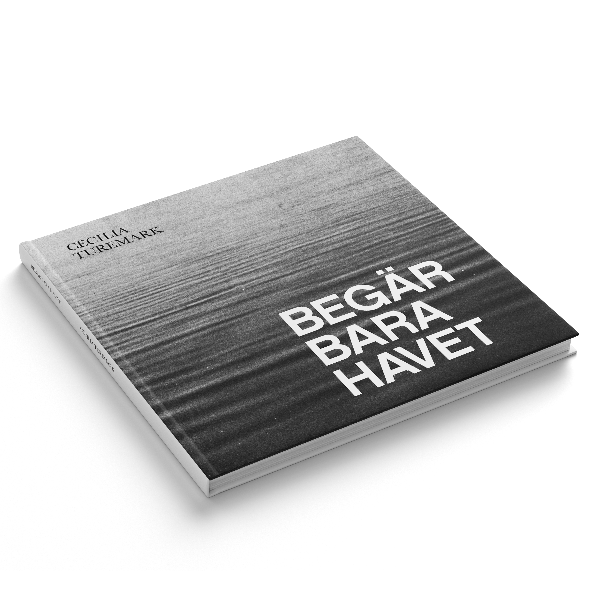

Book cover // desire only the ocean
If you live in the north, you probably know the feeling of wanting to enjoy every little bit of
sun you get after a long and dark winter. That is what I was trying to capture in this book,
the first sun of spring, in a small town close to the sea. I took the pictures with my grandfather's
old analogue camera, in his hometown, and then developed them myself. The book is accompanied
with poems about the ocean, to enhance the greatness of the ocean
